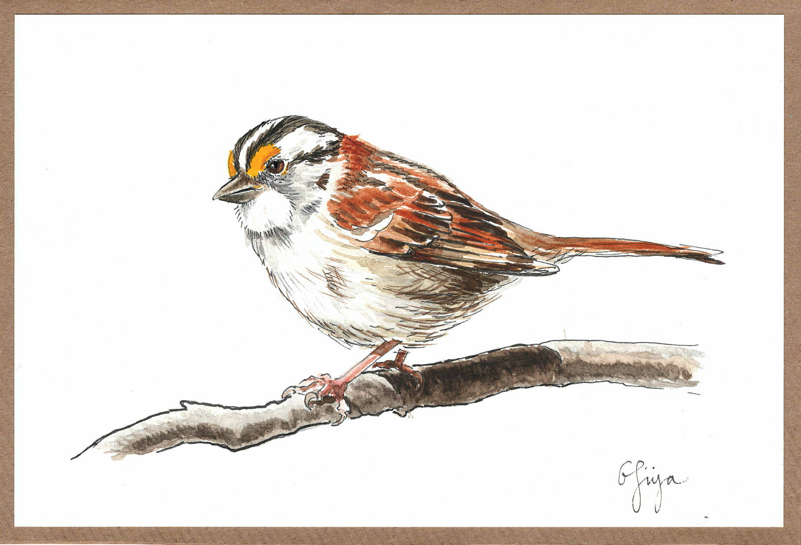
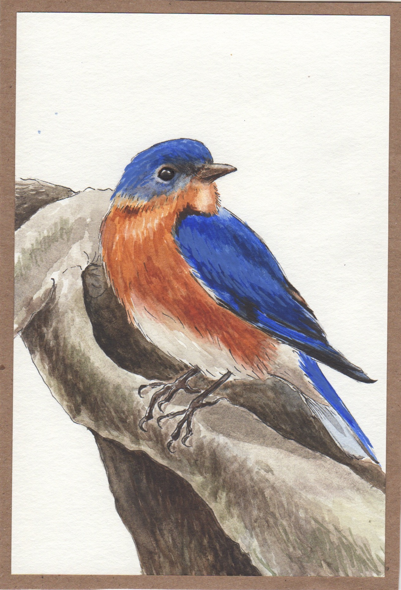
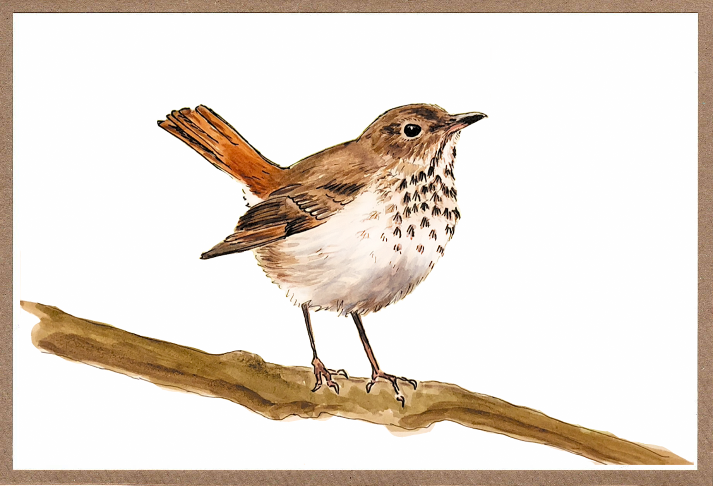
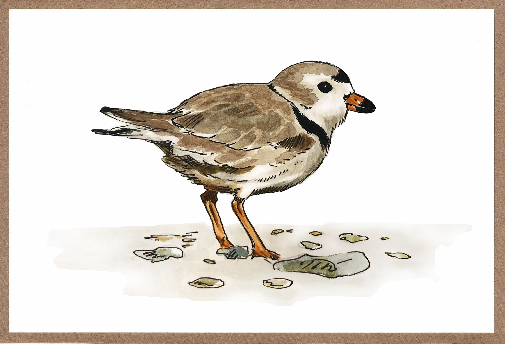

Eva Sibinga




Birds are cute and interesting! They've been my latest inspiration for things to draw. Each one here is done in
pencil, ink, and watercolor. From the top down,
they are a White-throated Sparrow, Eastern Bluebird, Hermit Thrush, and
Piping Plover.